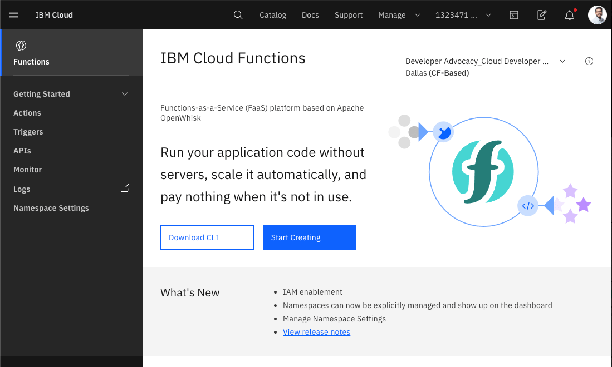

STEP 2: Adding Webhooks to Watson Assistant
Warning
This is material is part of the World Wide IBM Call for Code in 2020 Solution Starter Kit. Some links may not be working, however, the original contents are kept for reference only.
Defining webhooks
A webhook is a mechanism that allows you to call out to an external program based on something happening in your program. When used in a dialog skill, a webhook is triggered when the assistant processes a node that has a webhook enabled. The webhook collects data that you specify or that you collect from the user during the conversation and save in context variables.
It sends the data as part of a HTTP POST request to the URL that you specify as part of your webhook definition. The URL that receives the webhook is the listener. It performs a predefined action using the information that you pass to it as specified in the webhook definition, and can optionally return a response.
You can query for dynamic data using webhooks in IBM Watson Assistant. Our crisis communication chatbot uses two different sources:
Prerequisites
- Create an IBM Cloud Account.
- Create a Watson Assistant COVID-19 crisis communications chatbot. Follow these instructions
Creating Cloud Functions
-
In the IBM Cloud catalog, go to IBM Cloud Functions.
-
Click Start Creating.

- Select Create Action.

- Name your action. For the Runtime dropdown, select Node.js 16 or latest.
- Replace the code with action/covid-webhook.js

- Our code has two main parts. We decide whether to call the COVID-19 API or Watson Discovery based on a parameter sent on the function call. If a query param of
type=apiis set, you call the COVID-19 API on the summary endpoint.
It returns the data in the following format:
{
Countries: [
{
Country: "",
Slug: "",
NewConfirmed: 0,
TotalConfirmed: 0,
NewDeaths: 0,
TotalDeaths: 0,
NewRecovered: 0,
TotalRecovered: 0
},
{
Country: " Azerbaijan",
Slug: "-azerbaijan",
NewConfirmed: 0,
TotalConfirmed: 0,
NewDeaths: 0,
TotalDeaths: 0,
NewRecovered: 0,
TotalRecovered: 0
},
...
]
}
- If there is specific location (Country/Country Code/US State) selected, you look for that location either using The Weather Company API or in the summary response and return the status for that location.
For example, the response for type=api and location=United States of America is shown below.
{
"result": "Total Cases: 65778\nTotal Deaths: 942\nTotal Recovered: 361\n\nSource: Johns Hopkins CSSE"
}
- Enable the action as a web action. To do so, select the Endpoints tab on the left. Click the checkbox beside "Enable as Web Action."
- Make note of the HTTP URL. You will use this as the webhook for your assistant. You will have to add
.jsonin the end of this url to make it work as a webhook.
Integrate data sources via a Watson Assistant webhook
-
For detailed instructions on how to do this, check out our documentation: Making Programmatic Calls from Watson Assistant.
-
Bring up the COVID-19 assistant you created earlier. Find it in your IBM Cloud account under services > IBM Watson Assistant. Open the dialog by clicking the
CDC COVID FAQDialog.

- Click on Options on the left.
- Under Options > Webhooks, in the URL text box, paste the URL from the Cloud Funciton step. Make sure to add a
.jsonat the end of the URL.
- Select Dialog on the left navigation.
-
Open up any dialog node you want to add a webhook call for.
-
After selecting the node, click Customize.
- Enable Webhooks by moving the toggle button to On in the Webhooks section. Click Save.
- Add any parameter your webhook needs. These will be sent as query parameters.
- Test that your webhook integration is working by going to the Try It tab and initiating a dialog that calls the webhook.
You can easily use webhooks to give your Watson Assistant access to many external APIs and databases.